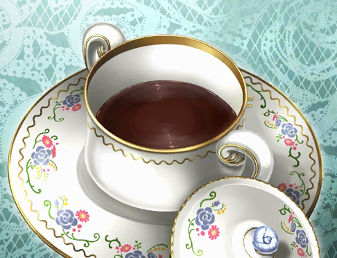

Tribute fan page to Fate/Grand Order
When chocolate was introduced to the French in the 17th century, it was reportedly used "to fight against fits of anger and bad moods", which may be attributed to chocolate's phenylethylamine content. Today, hot chocolate is consumed for pleasure rather than medicinally, but new research suggests that there may be other health benefits attributed to the drink.
Sulpice Debauve, was a chemist who served a pharmacist to King Louis XVI. On one of his visits to the royal family, Marie Antoinette complained about the unpleasant taste of her medicines. Debauve came up with the idea mixing it into a solid form of chocolate—a pistole or wafer-like disc that the Queen is said to have adored.
I'll say it once more, but by no means. By no means did I forget. I didn't forget, you hear? And I definitely didn't brew this in a hurry... okay?
---Saint Martha (Ruler)
A summer cocktail melted with chocolate, to be enjoyed at the seaside. It is said to have ten times the sugariness and stickiness of coffee and milk. Delicious. But Dangerous.